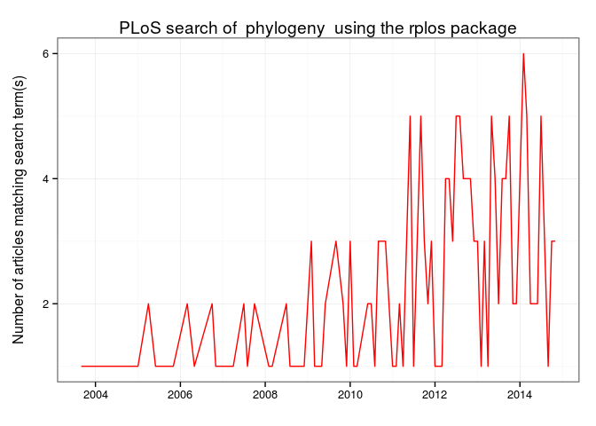

<!DOCTYPE html>

<html xmlns="http://www.w3.org/1999/xhtml">

<head>

<meta charset="utf-8">
<meta http-equiv="Content-Type" content="text/html; charset=utf-8" />
<meta name="generator" content="pandoc" />

<meta name="author" content="Andrew MacDonald and Dr. Jenny Bryan" />

<meta name="date" content="2014-11-11" />

<title>Stat 545 getting data from the Web</title>

<script src="libs/jquery-1.11.0/jquery.min.js"></script>
<meta name="viewport" content="width=device-width, initial-scale=1.0" />
<link href="libs/bootstrap-2.3.2/css/united.min.css" rel="stylesheet" />
<link href="libs/bootstrap-2.3.2/css/bootstrap-responsive.min.css" rel="stylesheet" />
<script src="libs/bootstrap-2.3.2/js/bootstrap.min.js"></script>

<style type="text/css">code{white-space: pre;}</style>
<link rel="stylesheet"
      href="libs/highlight/default.css"
      type="text/css" />
<script src="libs/highlight/highlight.js"></script>
<style type="text/css">
  pre:not([class]) {
    background-color: white;
  }
</style>
<script type="text/javascript">
if (window.hljs && document.readyState && document.readyState === "complete") {
   window.setTimeout(function() {
      hljs.initHighlighting();
   }, 0);
}
</script>


<link rel="stylesheet" href="libs/local/nav.css" type="text/css" />

</head>

<body>

<style type = "text/css">
.main-container {
  max-width: 940px;
  margin-left: auto;
  margin-right: auto;
}
</style>
<div class="container-fluid main-container">

<header>
  <div class="nav">
    <a class="nav-logo" href="index.html">
      
    </a>
    <ul>
      <li class="home"><a href="index.html">Home</a></li>
      <li class="faq"><a href="faq.html">FAQ</a></li>
      <li class="syllabus"><a href="syllabus.html">Syllabus</a></li>
      <li class="topics"><a href="topics.html">Topics</a></li>
      <li class="people"><a href="people.html">People</a></li>
    </ul>
  </div>
</header>

<div id="header">
<h1 class="title">Stat 545 getting data from the Web</h1>
<h4 class="author"><em>Andrew MacDonald and Dr. Jenny Bryan</em></h4>
<h4 class="date"><em>2014-11-11</em></h4>
</div>

<div id="TOC">
<ul>
<li><a href="#introduction">Introduction</a></li>
<li><a href="#click-and-download">Click-and-Download</a></li>
<li><a href="#install-and-play">install-and-play</a><ul>
<li><a href="#sightings-of-birds-rebird">Sightings of birds: <code>rebird</code></a></li>
<li><a href="#searching-geographic-info-geonames">Searching geographic info: <code>geonames</code></a></li>
<li><a href="#searching-the-public-library-of-science-rplos">Searching the Public Library of Science: <code>rplos</code></a><ul>
<li><a href="#alternate-strategy-for-keeping-keys-.rprofile">alternate strategy for keeping keys: <code>.Rprofile</code></a></li>
</ul></li>
<li><a href="#searching-plos">Searching PLOS</a><ul>
<li><a href="#take-a-highbrow-look">take a highbrow look!</a></li>
</ul></li>
<li><a href="#plots-over-time">plots over time</a></li>
<li><a href="#is-it-a-boy-or-a-girl-gender-throughout-us-history">is it a boy or a girl? <code>gender</code> throughout US history</a></li>
</ul></li>
</ul>
</div>

<pre class="r"><code>library(dplyr)
library(knitr)
library(devtools)</code></pre>
<div id="introduction" class="section level1">
<h1>Introduction</h1>
<p>There are many ways to obtain data from the Internet; let’s consider four categories:</p>
<ul>
<li><em>click-and-download</em> on the internet as a “flat” file, such as .csv, .xls</li>
<li><em>install-and-play</em> published in a repository which has an API , which has been wrapped</li>
<li><em>API-query</em> published with an unwrapped API</li>
<li><em>Scraping</em> implicit in an html website</li>
</ul>
</div>
<div id="click-and-download" class="section level1">
<h1>Click-and-Download</h1>
<p>We’re not going to consider data that needs to be downloaded to your hard drive first, and which may require filling out a form etc. For example <a href="">World Value Survey</a> or <a href="">gapminder</a></p>
</div>
<div id="install-and-play" class="section level1">
<h1>install-and-play</h1>
<p>Many web data sources provide a structured way of requesting and presenting data. A set of rules controls how computer programs (“clients”) can make requests of the server, and how the server will respond. These rules are called <strong>A</strong>pplication <strong>P</strong>rogramming <strong>I</strong>nterfaces (API).</p>
<p>Many common web services and APIs have been “wrapped”, i.e. R functions have been written around them which send your query to the server and format the response.</p>
<p>Why do we want this?</p>
<ul>
<li>provenance</li>
<li>reproducible</li>
<li>updating</li>
<li>ease</li>
<li>scaling</li>
</ul>
<div id="sightings-of-birds-rebird" class="section level2">
<h2>Sightings of birds: <code>rebird</code></h2>
<p><a href="https://github.com/ropensci/rebird">Rebird</a> is an R interface for the <a href="">ebird</a> database. Ebird lets birders upload sightings of birds, and allows everyone access to those data.</p>
<pre class="r"><code>install.packages(&quot;rebird&quot;)</code></pre>
<pre class="r"><code>library(rebird)</code></pre>
<p>Find out <em>WHEN</em> a bird has been seen in a certain place!</p>
<pre class="r"><code>ebirdgeo(species = &#39;spinus tristis&#39;, lat = 42, lng = -76)</code></pre>
<p>rebird <strong>knows where you are</strong>:</p>
<pre class="r"><code>ebirdgeo(species = &#39;Buteo lagopus&#39;)</code></pre>
<p>Get a list for an area. (Note that South and West are negative):</p>
<pre class="r"><code>vanbirds &lt;- ebirdgeo(lat = 49.2500, lng = -123.1000)
vanbirds %&gt;%
    head %&gt;%
    kable</code></pre>
<table>
<thead>
<tr class="header">
<th align="left">comName</th>
<th align="right">howMany</th>
<th align="right">lat</th>
<th align="right">lng</th>
<th align="left">locID</th>
<th align="left">locName</th>
<th align="left">locationPrivate</th>
<th align="left">obsDt</th>
<th align="left">obsReviewed</th>
<th align="left">obsValid</th>
<th align="left">sciName</th>
</tr>
</thead>
<tbody>
<tr class="odd">
<td align="left">Common Merganser</td>
<td align="right">10</td>
<td align="right">49.17</td>
<td align="right">-122.9</td>
<td align="left">L1140384</td>
<td align="left">Annacis Island</td>
<td align="left">FALSE</td>
<td align="left">2014-11-23 15:45</td>
<td align="left">FALSE</td>
<td align="left">TRUE</td>
<td align="left">Mergus merganser</td>
</tr>
<tr class="even">
<td align="left">Northwestern Crow</td>
<td align="right">20</td>
<td align="right">49.17</td>
<td align="right">-122.9</td>
<td align="left">L1140384</td>
<td align="left">Annacis Island</td>
<td align="left">FALSE</td>
<td align="left">2014-11-23 15:45</td>
<td align="left">FALSE</td>
<td align="left">TRUE</td>
<td align="left">Corvus caurinus</td>
</tr>
<tr class="odd">
<td align="left">Mallard</td>
<td align="right">20</td>
<td align="right">49.17</td>
<td align="right">-122.9</td>
<td align="left">L1140384</td>
<td align="left">Annacis Island</td>
<td align="left">FALSE</td>
<td align="left">2014-11-23 15:45</td>
<td align="left">FALSE</td>
<td align="left">TRUE</td>
<td align="left">Anas platyrhynchos</td>
</tr>
<tr class="even">
<td align="left">Great Blue Heron</td>
<td align="right">1</td>
<td align="right">49.17</td>
<td align="right">-122.9</td>
<td align="left">L1140384</td>
<td align="left">Annacis Island</td>
<td align="left">FALSE</td>
<td align="left">2014-11-23 15:45</td>
<td align="left">FALSE</td>
<td align="left">TRUE</td>
<td align="left">Ardea herodias</td>
</tr>
<tr class="odd">
<td align="left">Golden-crowned Kinglet</td>
<td align="right">1</td>
<td align="right">49.17</td>
<td align="right">-122.9</td>
<td align="left">L1140384</td>
<td align="left">Annacis Island</td>
<td align="left">FALSE</td>
<td align="left">2014-11-23 15:45</td>
<td align="left">FALSE</td>
<td align="left">TRUE</td>
<td align="left">Regulus satrapa</td>
</tr>
<tr class="even">
<td align="left">Green-winged Teal</td>
<td align="right">25</td>
<td align="right">49.17</td>
<td align="right">-122.9</td>
<td align="left">L1140384</td>
<td align="left">Annacis Island</td>
<td align="left">FALSE</td>
<td align="left">2014-11-23 15:45</td>
<td align="left">FALSE</td>
<td align="left">TRUE</td>
<td align="left">Anas crecca</td>
</tr>
</tbody>
</table>
<p>Check the defaults on this function. e.g. radius of circle, time of year.</p>
<p>Birds in a region:</p>
<pre class="r"><code>ebirdregion(&quot;AI&quot;)</code></pre>
<p>(note that the link in the help file leads to a dead link (as I write this on 24 Nov) but you can probably use the codes from geonames, below)</p>
</div>
<div id="searching-geographic-info-geonames" class="section level2">
<h2>Searching geographic info: <code>geonames</code></h2>
<pre class="r"><code>#install.packages(&quot;rjson&quot;)
#install_github(&quot;ropensci/geonames&quot;)

library(geonames)</code></pre>
<p>There are two things we need to do to be able to use this package to access the geonames API</p>
<ol style="list-style-type: decimal">
<li>go to <a href="www.geonames.org/login/">the geonames site</a> and register an account.</li>
<li>click <a href="http://www.geonames.org/enablefreewebservice">here</a></li>
<li>Tell R your geonames username:</li>
</ol>
<pre class="r"><code>options(geonamesUsername=&quot;aammd&quot;)</code></pre>
<p>What can we do? get access to lots of geographical information via the various “web services” see <a href="http://www.geonames.org/export/ws-overview.html">here</a> </p>
<pre class="r"><code>countryInfo &lt;- GNcountryInfo()</code></pre>
<pre class="r"><code>countryInfo %&gt;%
    head %&gt;%
    kable</code></pre>
<table>
<thead>
<tr class="header">
<th align="left">continent</th>
<th align="left">capital</th>
<th align="left">languages</th>
<th align="left">geonameId</th>
<th align="left">south</th>
<th align="left">isoAlpha3</th>
<th align="left">north</th>
<th align="left">fipsCode</th>
<th align="left">population</th>
<th align="left">east</th>
<th align="left">isoNumeric</th>
<th align="left">areaInSqKm</th>
<th align="left">countryCode</th>
<th align="left">west</th>
<th align="left">countryName</th>
<th align="left">continentName</th>
<th align="left">currencyCode</th>
</tr>
</thead>
<tbody>
<tr class="odd">
<td align="left">EU</td>
<td align="left">Andorra la Vella</td>
<td align="left">ca</td>
<td align="left">3041565</td>
<td align="left">42.4284925987684</td>
<td align="left">AND</td>
<td align="left">42.6560438963</td>
<td align="left">AN</td>
<td align="left">84000</td>
<td align="left">1.78654277783198</td>
<td align="left">020</td>
<td align="left">468.0</td>
<td align="left">AD</td>
<td align="left">1.40718671411128</td>
<td align="left">Principality of Andorra</td>
<td align="left">Europe</td>
<td align="left">EUR</td>
</tr>
<tr class="even">
<td align="left">AS</td>
<td align="left">Abu Dhabi</td>
<td align="left">ar-AE,fa,en,hi,ur</td>
<td align="left">290557</td>
<td align="left">22.6333293914795</td>
<td align="left">ARE</td>
<td align="left">26.0841598510742</td>
<td align="left">AE</td>
<td align="left">4975593</td>
<td align="left">56.3816604614258</td>
<td align="left">784</td>
<td align="left">82880.0</td>
<td align="left">AE</td>
<td align="left">51.5833282470703</td>
<td align="left">United Arab Emirates</td>
<td align="left">Asia</td>
<td align="left">AED</td>
</tr>
<tr class="odd">
<td align="left">AS</td>
<td align="left">Kabul</td>
<td align="left">fa-AF,ps,uz-AF,tk</td>
<td align="left">1149361</td>
<td align="left">29.377472</td>
<td align="left">AFG</td>
<td align="left">38.483418</td>
<td align="left">AF</td>
<td align="left">29121286</td>
<td align="left">74.879448</td>
<td align="left">004</td>
<td align="left">647500.0</td>
<td align="left">AF</td>
<td align="left">60.478443</td>
<td align="left">Islamic Republic of Afghanistan</td>
<td align="left">Asia</td>
<td align="left">AFN</td>
</tr>
<tr class="even">
<td align="left">NA</td>
<td align="left">Saint John’s</td>
<td align="left">en-AG</td>
<td align="left">3576396</td>
<td align="left">16.996979</td>
<td align="left">ATG</td>
<td align="left">17.729387</td>
<td align="left">AC</td>
<td align="left">86754</td>
<td align="left">-61.672421</td>
<td align="left">028</td>
<td align="left">443.0</td>
<td align="left">AG</td>
<td align="left">-61.906425</td>
<td align="left">Antigua and Barbuda</td>
<td align="left">North America</td>
<td align="left">XCD</td>
</tr>
<tr class="odd">
<td align="left">NA</td>
<td align="left">The Valley</td>
<td align="left">en-AI</td>
<td align="left">3573511</td>
<td align="left">18.166815</td>
<td align="left">AIA</td>
<td align="left">18.283424</td>
<td align="left">AV</td>
<td align="left">13254</td>
<td align="left">-62.971359</td>
<td align="left">660</td>
<td align="left">102.0</td>
<td align="left">AI</td>
<td align="left">-63.172901</td>
<td align="left">Anguilla</td>
<td align="left">North America</td>
<td align="left">XCD</td>
</tr>
<tr class="even">
<td align="left">EU</td>
<td align="left">Tirana</td>
<td align="left">sq,el</td>
<td align="left">783754</td>
<td align="left">39.648361</td>
<td align="left">ALB</td>
<td align="left">42.665611</td>
<td align="left">AL</td>
<td align="left">2986952</td>
<td align="left">21.068472</td>
<td align="left">008</td>
<td align="left">28748.0</td>
<td align="left">AL</td>
<td align="left">19.293972</td>
<td align="left">Republic of Albania</td>
<td align="left">Europe</td>
<td align="left">ALL</td>
</tr>
</tbody>
</table>
<p>This country info dataset is very helpful for accessing the rest of the data, because it gives us the standardized codes for country and language.</p>
<p>What are the cities of France?</p>
<pre class="r"><code>countryInfo %&gt;%
    filter(countryName == &quot;France&quot;) %&gt;%
    GNcities(north = .$north, east = .$east, south = .$south, west = .$west, maxRows = 500) %&gt;%
    ungroup %&gt;%
    head %&gt;%
    kable</code></pre>
<table>
<thead>
<tr class="header">
<th align="left">lng</th>
<th align="left">geonameId</th>
<th align="left">countrycode</th>
<th align="left">name</th>
<th align="left">fclName</th>
<th align="left">toponymName</th>
<th align="left">fcodeName</th>
<th align="left">wikipedia</th>
<th align="left">lat</th>
<th align="left">fcl</th>
<th align="left">population</th>
<th align="left">fcode</th>
</tr>
</thead>
<tbody>
<tr class="odd">
<td align="left">2.3488</td>
<td align="left">2988507</td>
<td align="left">FR</td>
<td align="left">Paris</td>
<td align="left">city, village,…</td>
<td align="left">Paris</td>
<td align="left">capital of a political entity</td>
<td align="left">en.wikipedia.org/wiki/Paris</td>
<td align="left">48.85341</td>
<td align="left">P</td>
<td align="left">2138551</td>
<td align="left">PPLC</td>
</tr>
<tr class="even">
<td align="left">4.34878349304199</td>
<td align="left">2800866</td>
<td align="left">BE</td>
<td align="left">Brusela</td>
<td align="left">city, village,…</td>
<td align="left">Brussels</td>
<td align="left">capital of a political entity</td>
<td align="left">en.wikipedia.org/wiki/City_of_Brussels</td>
<td align="left">50.8504450552593</td>
<td align="left">P</td>
<td align="left">1019022</td>
<td align="left">PPLC</td>
</tr>
<tr class="odd">
<td align="left">7.44744300842285</td>
<td align="left">2661552</td>
<td align="left">CH</td>
<td align="left">Berna</td>
<td align="left">city, village,…</td>
<td align="left">Bern</td>
<td align="left">capital of a political entity</td>
<td align="left">en.wikipedia.org/wiki/Bern</td>
<td align="left">46.9480943365053</td>
<td align="left">P</td>
<td align="left">121631</td>
<td align="left">PPLC</td>
</tr>
<tr class="even">
<td align="left">6.13</td>
<td align="left">2960316</td>
<td align="left">LU</td>
<td align="left">Luxenburgo</td>
<td align="left">city, village,…</td>
<td align="left">Luxembourg</td>
<td align="left">capital of a political entity</td>
<td align="left">en.wikipedia.org/wiki/Luxembourg_%28city%29</td>
<td align="left">49.6116667</td>
<td align="left">P</td>
<td align="left">76684</td>
<td align="left">PPLC</td>
</tr>
<tr class="odd">
<td align="left">7.4166667</td>
<td align="left">2993458</td>
<td align="left">MC</td>
<td align="left">Monaco</td>
<td align="left">city, village,…</td>
<td align="left">Monaco</td>
<td align="left">capital of a political entity</td>
<td align="left">en.wikipedia.org/wiki/Monaco</td>
<td align="left">43.7333333</td>
<td align="left">P</td>
<td align="left">32965</td>
<td align="left">PPLC</td>
</tr>
<tr class="even">
<td align="left">-2.10491180419922</td>
<td align="left">3042091</td>
<td align="left">JE</td>
<td align="left">Saint Helier</td>
<td align="left">city, village,…</td>
<td align="left">Saint Helier</td>
<td align="left">capital of a political entity</td>
<td align="left">en.wikipedia.org/wiki/Saint_Helier</td>
<td align="left">49.1880427659223</td>
<td align="left">P</td>
<td align="left">28000</td>
<td align="left">PPLC</td>
</tr>
</tbody>
</table>
<p>How many birds have been seen in France?</p>
<pre class="r"><code>francebirds &lt;- countryInfo %&gt;%
    filter(countryName == &quot;France&quot;) %&gt;%
    group_by(countryName) %&gt;%
    do(allbirds = ebirdregion(.$countryCode))  ## or perhaps fipsCode?

francebirds %&gt;%
    summarize(nbirds = nrow(allbirds)) %&gt;%
    ungroup %&gt;%
    kable</code></pre>
<table>
<thead>
<tr class="header">
<th align="right">nbirds</th>
</tr>
</thead>
<tbody>
<tr class="odd">
<td align="right">156</td>
</tr>
</tbody>
</table>
<p>Geonames also helps us search Wikipedia!</p>
<pre class="r"><code>GNwikipediaSearch(&quot;London&quot;) %&gt;%
    select(-summary) %&gt;%
    head %&gt;%
    kable</code></pre>
<table>
<thead>
<tr class="header">
<th align="left">elevation</th>
<th align="left">geoNameId</th>
<th align="left">feature</th>
<th align="left">lng</th>
<th align="left">countryCode</th>
<th align="left">rank</th>
<th align="left">thumbnailImg</th>
<th align="left">lang</th>
<th align="left">title</th>
<th align="left">lat</th>
<th align="left">wikipediaUrl</th>
</tr>
</thead>
<tbody>
<tr class="odd">
<td align="left">2</td>
<td align="left">2643741</td>
<td align="left">city</td>
<td align="left">-0.07857</td>
<td align="left">GB</td>
<td align="left">100</td>
<td align="left"><a href="http://www.geonames.org/img/wikipedia/43000/thumb-42715-100.jpg" class="uri">http://www.geonames.org/img/wikipedia/43000/thumb-42715-100.jpg</a></td>
<td align="left">en</td>
<td align="left">London</td>
<td align="left">51.504872</td>
<td align="left">en.wikipedia.org/wiki/London</td>
</tr>
<tr class="even">
<td align="left">262</td>
<td align="left">6058560</td>
<td align="left">city</td>
<td align="left">-81.2497</td>
<td align="left">CA</td>
<td align="left">100</td>
<td align="left"><a href="http://www.geonames.org/img/wikipedia/58000/thumb-57388-100.jpg" class="uri">http://www.geonames.org/img/wikipedia/58000/thumb-57388-100.jpg</a></td>
<td align="left">en</td>
<td align="left">London, Ontario</td>
<td align="left">42.9837</td>
<td align="left">en.wikipedia.org/wiki/London%2C_Ontario</td>
</tr>
<tr class="odd">
<td align="left">60</td>
<td align="left">1006984</td>
<td align="left">city</td>
<td align="left">27.9036078333333</td>
<td align="left">ZA</td>
<td align="left">100</td>
<td align="left"><a href="http://www.geonames.org/img/wikipedia/138000/thumb-137098-100.jpg" class="uri">http://www.geonames.org/img/wikipedia/138000/thumb-137098-100.jpg</a></td>
<td align="left">en</td>
<td align="left">East London, Eastern Cape</td>
<td align="left">-33.0145668333333</td>
<td align="left">en.wikipedia.org/wiki/East_London%2C_Eastern_Cape</td>
</tr>
<tr class="even">
<td align="left">14</td>
<td align="left">NA</td>
<td align="left">adm1st</td>
<td align="left">-0.0159638888888889</td>
<td align="left">GB</td>
<td align="left">98</td>
<td align="left"><a href="http://www.geonames.org/img/wikipedia/157000/thumb-156609-100.jpg" class="uri">http://www.geonames.org/img/wikipedia/157000/thumb-156609-100.jpg</a></td>
<td align="left">en</td>
<td align="left">London Borough of Lewisham</td>
<td align="left">51.4568777777778</td>
<td align="left">en.wikipedia.org/wiki/London_Borough_of_Lewisham</td>
</tr>
<tr class="odd">
<td align="left">27</td>
<td align="left">4839416</td>
<td align="left">NA</td>
<td align="left">-72.1008333333333</td>
<td align="left">US</td>
<td align="left">100</td>
<td align="left"><a href="http://www.geonames.org/img/wikipedia/160000/thumb-159123-100.jpg" class="uri">http://www.geonames.org/img/wikipedia/160000/thumb-159123-100.jpg</a></td>
<td align="left">en</td>
<td align="left">New London, Connecticut</td>
<td align="left">41.3555555555556</td>
<td align="left">en.wikipedia.org/wiki/New_London%2C_Connecticut</td>
</tr>
<tr class="even">
<td align="left">13</td>
<td align="left">NA</td>
<td align="left">adm1st</td>
<td align="left">-0.303547222222222</td>
<td align="left">GB</td>
<td align="left">100</td>
<td align="left"><a href="http://www.geonames.org/img/wikipedia/146000/thumb-145782-100.jpg" class="uri">http://www.geonames.org/img/wikipedia/146000/thumb-145782-100.jpg</a></td>
<td align="left">en</td>
<td align="left">London Borough of Richmond upon Thames</td>
<td align="left">51.4613416666667</td>
<td align="left">en.wikipedia.org/wiki/London_Borough_of_Richmond_upon_Thames</td>
</tr>
</tbody>
</table>
<p>We can use geonames to search for georeferenced Wikipedia articles! here are those within 20 Km of Rio de Janerio:</p>
<pre class="r"><code>rio_english &lt;- GNfindNearbyWikipedia(lat = -22.9083, lng = -43.1964, radius = 20, lang = &quot;en&quot;, maxRows = 500)
rio_portuguese &lt;- GNfindNearbyWikipedia(lat = -22.9083, lng = -43.1964, radius = 20, lang = &quot;pt&quot;, maxRows = 500)

nrow(rio_english)</code></pre>
<pre><code>## [1] 305</code></pre>
<pre class="r"><code>nrow(rio_portuguese)</code></pre>
<pre><code>## [1] 349</code></pre>
</div>
<div id="searching-the-public-library-of-science-rplos" class="section level2">
<h2>Searching the Public Library of Science: <code>rplos</code></h2>
<p>PLOS ONE is an open-access journal. They allow access to an impressive range of search tools, and allow you to obtain the full text of their articles.</p>
<pre class="r"><code>install.packages(&quot;rplos&quot;)
## Do this only once:</code></pre>
<pre class="r"><code>library(rplos)</code></pre>
<pre><code>## Loading required package: ggplot2
## 
## 
##  New to rplos? Tutorial at http://ropensci.org/tutorials/rplos_tutorial.html. Use suppressPackageStartupMessages() to suppress these startup messages in the future</code></pre>
<p>Immediately we get a message. It’s a link to the <a href="http://ropensci.org/tutorials/rplos_tutorial.html">tutorial on the Ropensci website!</a>. How nice :)</p>
<ul>
<li>We also get instructions to create a PLOS account: <a href="https://register.plos.org/ambra-registration/register.action" class="uri">https://register.plos.org/ambra-registration/register.action</a></li>
<li>Then go to Article Level Metrics <a href="http://alm.plos.org/" class="uri">http://alm.plos.org/</a></li>
<li>click on your name to find your key.</li>
</ul>
<pre class="r"><code>Sys.setenv(PlosApiKey = &quot;Paste your Key in here!!&quot;)
key &lt;-  Sys.getenv(&quot;PlosApiKey&quot;)</code></pre>
<div id="alternate-strategy-for-keeping-keys-.rprofile" class="section level3">
<h3>alternate strategy for keeping keys: <code>.Rprofile</code></h3>
<p><strong>Remember to protect your key! it is important for your privacy. You know, like a key</strong> Now we follow the ROpenSci <a href="https://github.com/ropensci/rOpenSci/wiki/Installation-and-use-of-API-keys">tutorial on API keys</a> Make a <code>.rprofile</code> file <a href="http://cran.r-project.org/bin/windows/rw-FAQ.html#What-are-HOME-and-working-directories_003f">windows tips</a> <a href="http://cran.r-project.org/bin/macosx/RMacOSX-FAQ.html#The-R-Console">mac tips</a> Write the following in it:</p>
<pre class="r"><code>options(PlosApiKey= &quot;YOUR_KEY&quot;)</code></pre>
</div>
</div>
<div id="searching-plos" class="section level2">
<h2>Searching PLOS</h2>
<p>Let’s do some searches:</p>
<pre class="r"><code>searchplos(q= &quot;Helianthus&quot;, fl= &quot;id&quot;, limit = 5, key = key)</code></pre>
<pre class="r"><code>searchplos(&quot;materials_and_methods:France&quot;, fl = &quot;title, materials_and_methods&quot;, key = key)
lat &lt;- searchplos(&quot;materials_and_methods:study site&quot;, fl = &quot;title, materials_and_methods&quot;, key = key)
aff &lt;- searchplos(&quot;*:*&quot;, fl = &quot;title, author_affiliate&quot;, key = key)
aff$author_affiliate[[2]]
searchplos(&quot;*:*&quot;, fl = &quot;id&quot;, key = key)</code></pre>
<p>here is a list of <a href="http://api.plos.org/solr/search-fields/">options for the search</a> or can do <code>data(plosfields); plosfields</code></p>
<div id="take-a-highbrow-look" class="section level3">
<h3>take a highbrow look!</h3>
<pre class="r"><code>out &lt;- highplos(q=&#39;alcohol&#39;, hl.fl = &#39;abstract&#39;, rows=10, , key = key)
highbrow(out)</code></pre>
</div>
</div>
<div id="plots-over-time" class="section level2">
<h2>plots over time</h2>
<pre class="r"><code>plot_throughtime(terms = &quot;phylogeny&quot;, limit = 200, key = key)</code></pre>
<p></p>
</div>
<div id="is-it-a-boy-or-a-girl-gender-throughout-us-history" class="section level2">
<h2>is it a boy or a girl? <code>gender</code> throughout US history</h2>
<pre class="r"><code>devtools::install_github(&quot;lmullen/gender-data-pkg&quot;)
devtools::install_github(&quot;ropensci/gender&quot;)</code></pre>
<p>The gender package allows you access to American data on the gender of names. Because names change gender over the years, the probability of a name belonging to a man or a woman also depends on the <em>year</em>:</p>
<pre class="r"><code>library(gender)
gender(&quot;Kelsey&quot;)</code></pre>
<pre><code>## $name
## [1] &quot;Kelsey&quot;
## 
## $proportion_male
## [1] 0.0314
## 
## $proportion_female
## [1] 0.9686
## 
## $gender
## [1] &quot;female&quot;
## 
## $year_min
## [1] 1932
## 
## $year_max
## [1] 2012</code></pre>
<pre class="r"><code>gender(&quot;Kelsey&quot;, years = 1940)</code></pre>
<pre><code>## $name
## [1] &quot;Kelsey&quot;
## 
## $proportion_male
## [1] 1
## 
## $proportion_female
## [1] 0
## 
## $gender
## [1] &quot;male&quot;
## 
## $year_min
## [1] 1940
## 
## $year_max
## [1] 1940</code></pre>
</div>
</div>

<div class="footer">
This work is licensed under the  <a href="http://creativecommons.org/licenses/by-nc/3.0/">CC BY-NC 3.0 Creative Commons License</a>.
</div>

</div>

<script>

// add bootstrap table styles to pandoc tables
$(document).ready(function () {
  $('tr.header').parent('thead').parent('table').addClass('table table-condensed');
});

</script>

<!-- dynamically load mathjax for compatibility with self-contained -->
<script>
  (function () {
    var script = document.createElement("script");
    script.type = "text/javascript";
    script.src  = "https://cdn.mathjax.org/mathjax/latest/MathJax.js?config=TeX-AMS-MML_HTMLorMML";
    document.getElementsByTagName("head")[0].appendChild(script);
  })();
</script>

</body>
</html>
